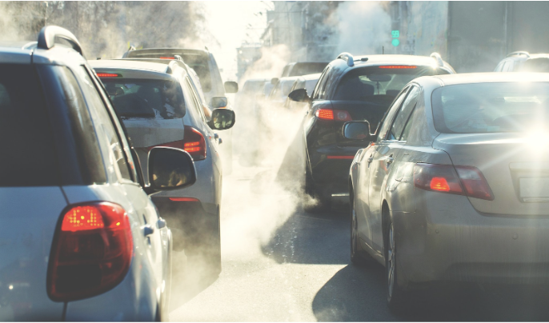

Introduction
The transportation sector plays a huge role in global greenhouse gas emissions, making up about 28% of worldwide CO₂ output in 2022 (United States Environmental Protection Agency). Within this sector, road vehicles (cars, buses, and trucks) are the main source, generating nearly three fourth of all transport-related emissions. Passenger vehicles alone, such as cars and buses, contribute roughly 45% of these emissions (Ritchie & Roser, 2020). This heavy dependence on gasoline and diesel powered transport has led to transportation being a major driver of climate change. To keep global warming below 1.5°C, experts estimate that emissions from the transportation sector must fall by at least 80% by 2050, with the largest reductions expected from passenger cars.

Emissions from vehicles that run on gasoline or diesel (also known as ICEVs) don’t just contribute to climate change, but they also have serious consequences on public health. According to the World Health Organization, air pollution from vehicle exhausts is a major factor behind respiratory illnesses, heart disease, and even early deaths across the globe.
Switching to electric vehicles (EVs) is widely seen as one of the best ways to cut down on emissions from transportation. Battery electric vehicles (BEVs), in particular, are a preferred alternative to ICEVs because they don’t produce tailpipe emissions and help reduce our dependence on gasoline and diesel. In recent years, improvements in battery technology, more charging stations, and conducive government policies have made BEVs more appealing to customers. As a result, BEVs are becoming an increasingly important part of efforts to lower emissions from the transportation sector.
Switching to BEVs is a practical way to cut greenhouse gas emissions and tackle climate change. Electric cars don’t produce tailpipe pollution and use less fossil fuel, so they can help make transportation cleaner and more sustainable. There are still hurdles to overcome like the environmental cost of making batteries, building enough charging stations, and making sure the cost is low enough for widespread adoption. Nonetheless, when electric vehicles are powered by renewable energy, their advantages greatly outweigh the downsides. Hence, we believe BEVs are likely to play a key role in moving toward a low-carbon future.
The Proposed Strategy – Pros
Our research finds that aligning with Paris Agreement targets will require phasing out sales of new ICEVs by the year 2035. However, the transition to BEVs need not wait for future power sector improvements because BEVs already have lower life-cycle emissions compared to similar ICEVs, even in geographies where a large proportion of electricity is generated using coal and other non-renewable methods (Bieker, 2021).
In Europe, medium-size EVs emitted 66-69% lower emissions than similar ICEVs in 2021, with projections reaching 74-77% by 2030. In the US, the reduction was 60-68% in 2021, expected to reach 62-76% by 2030. These figures vary by region, with cleaner electricity grids amplifying the benefits.
A study conducted by Cotes also found that the total carbon footprint of an ICEV quickly overtakes that of an EV after 15,000 miles of driving. If the EV draws electricity from a largely coal powered grid, the catchup period stretches to more than five years. If powered by hydroelectricity, the catchup period is only about six months.
Research from the Keck School of Medicine of USC found that in California, for every 20 more BEVs per 1,000 people, asthma-related emergency room visits dropped by 3.2%. The American Lung Association projects that a full shift to zero-emission vehicles by 2035 could prevent 89,300 premature deaths, 2.2 million asthma attacks, and 10.7 million lost workdays by 2050.
The Proposed Strategy – Cons
While the widespread adoption of BEVs could be a promising step toward decarbonizing transportation, there are a few issues that must be addressed beforehand. BEVs currently have higher upfront costs, primarily due to battery production, and many consumers face “range anxiety.”
Charging times are also considerably longer than refueling traditional gas-powered vehicles. Furthermore, mining for lithium and other battery materials creates environmental concerns and raises ethical questions in regions with poor labor standards.
However, newer battery chemistries and the steady decline in battery prices—from $1500/kWh in 2010 to $115/kWh in 2024—show promise in addressing these concerns.
Successful Implementations
Several nations have already shown great success in implementing electric vehicles. Norway leads the world, with over 80% of new vehicles sold in 2022 being electric. China and the Netherlands follow closely behind due to strong investments in charging infrastructure and vehicle subsidies.
The U.S. lags behind due to fragmented policy, but state-level efforts and the Inflation Reduction Act of 2022 could shift this trend toward more unified national support.
Conclusion
As climate change effects worsen, the global goal of keeping warming below 1.5°C is more important than ever. Electrifying passenger vehicles presents a clear, achievable path to reduce emissions, especially when paired with a decarbonized energy grid. Widespread EV adoption, paired with infrastructure investment, will play a key role in achieving climate goals.